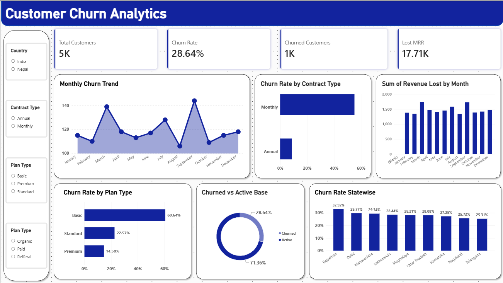

Basic plans need attention
Basic subscribers recorded 60.64% churn, versus 22.57% for Standard and 14.58% for Premium. Basic accounts contributed 701 of the 1,432 cancellations.
CASE STUDY 01 Customer analytics
Understanding who leaves, and where retention matters most.
THE BUSINESS QUESTION
An OTT subscription analysis bringing demographics, subscription terms, and support interactions into one customer-level view. A subscriber is classified as churned when a cancellation date is present.
FROM RAW DATA TO INSIGHT
Used SQLite and pandas to extract customer, subscription, and support tables. Customer and subscription records each contain 5,000 subscribers; support contains 5,000 interactions across 2,856 customers.
A direct support join created 7,144 rows. Calculated complaint frequency and retained the latest support interaction before left-joining to produce exactly one row per subscriber.
Standardized labels, filled missing country values from state mappings, and created churn flags, age, tenure, complaint counts, and score-based risk bands. Kept customers without support history in the analysis.
Compared plans, contracts, channels, support patterns, and locations with Python, then built a Power BI dashboard for subscriber KPIs, cancellation trends, and recurring-charge exposure.
THE FINDINGS
Churn by subscription plan
Canceled subscribers ÷ subscribers within each plan. Report, p. 8.
Basic subscribers recorded 60.64% churn, versus 22.57% for Standard and 14.58% for Premium. Basic accounts contributed 701 of the 1,432 cancellations.
Monthly contracts recorded 55.15% churn, compared with 8.72% for annual contracts — approximately 6.32 times the rate.
The latest escalation indicator had an approximately 0.42 Pearson correlation with churn. Escalated customers represent a useful group for further retention investigation.
Delhi recorded the largest cancellation volume at 281. Rajasthan had the highest location churn rate at 32.92%, indicating different regional priorities.
THE REPORTING LAYER
Original Power BI screenshots from my report. Open an image to inspect the full-size dashboard.

FROM FINDING TO NEXT STEP
Proposed next steps based on the analysis.
These are descriptive relationships, not proof of why customers cancel. Recommended campaigns have not been presented as implemented results. ¹ Financial values are in unspecified currency units; lost monthly charges measure canceled accounts’ recurring charges, not cumulative realized losses.
Customer Churn Analytics Report, pp. 3–12; resume.
Open project report (PDF)